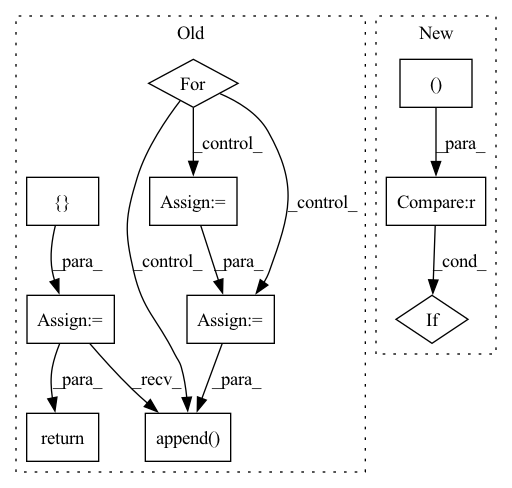

Pattern ID :11640

Before Change
ctx = ctx.add_to_prefix("shampoo", count=False)
preconditioner = Preconditioner(grad, ctx.optimizer.block_size)
new_preconditioners = []
for i, old_stat in enumerate(preconditioner.statistics_from_grad(grad)):
new_stat = ema(ctx, old_stat, step, 1 - ctx.optimizer.shampoo_beta2, f"statistics_{i}", True,
jnp.eye(old_stat.shape[0], dtype=ctx.model.storage_dtype) * ctx.optimizer.epsilon)
prev_p = get_param(ctx, f"preconditioner_{i}", old_stat.shape, dtype=ctx.model.storage_dtype,
init_val=jnp.eye(old_stat.shape[0], dtype=ctx.model.storage_dtype))
if ctx.is_initializing:
continue
new_p, error = matrix_inverse_pth_root(new_stat, preconditioner.exponent_for_preconditioner(),
ridge_epsilon=ctx.optimizer.epsilon)
new_p = select_preconditioner(error, new_p, prev_p)
new_preconditioners.append(new_p)
assign(ctx, f"preconditioner_{i}", new_p)
if ctx.is_initializing:
return grad
return preconditioner.preconditioned_grad(grad, new_preconditioners)
def clip_norm(val: jnp.ndarray, min_norm: float) -> jnp.ndarray:
After Change
def shampoo(ctx: Context, grad: jnp.ndarray, step: jnp.ndarray) -> jnp.ndarray:
last_size = grad.shape[-1]
kernel_sizes = (ctx.dims.pointwise_kernel, ctx.dims.outer_bottleneck_kernel, ctx.dims.inner_bottleneck_kernel)
if grad.ndim != 3 or last_size not in kernel_sizes:
return _shampoo(ctx, grad, step)
return jnp.stack([_shampoo(ctx, grad[:, :, i], step) for i in range(last_size)])
In pattern: SUPERPATTERN
Frequency: 4
Non-data size: 10
Instances
Fragment ID: 39472362
Project Name: homebrewnlp/olmax
Commit Name: cee3cb499f3e75c256827c8b9e52ebe1d028e39d
Time: 2022-06-28
Author: 39779310+ClashLuke@users.noreply.github.com
File Name: src/optimizer.py
M Class Name: AnonimousClass
N Class Name: AnonimousClass
M Method Name: shampoo(3)
N Method Name: shampoo(3)
M Parent Class:
N Parent Class:
M File Name: src/optimizer.py
N File Name: src/optimizer.py
M Start Line: 70
M End Line: 89
N Start Line: 93
N End Line: 97
'>
Before Change
num_classes = scores.size(-2)
predictions = torch.max(scores, dim=-2).indices
accuracies = []
accuracy_mask = predictions == labels
n_total = 0
n_correct = 0
for label in range(num_classes):
label_mask = labels == label
per_class_accuracy = (accuracy_mask & label_mask).float().sum()
n_correct += per_class_accuracy
per_class_accuracy /= label_mask.float().sum()
n_total += label_mask.float().sum()
accuracies.append(per_class_accuracy.cpu().item())
// overall accuracy
accuracies.append(np.nanmean(accuracies))
return accuracies
def iou(self, scores, labels):
rCompute the per-class IoU and the mean IoU.
After Change
accs = []
for label in range(self.num_classes):
tp = np.longlong(self.confusion_matrix[label, label])
fn = np.longlong(self.confusion_matrix[label, :].sum()) - tp
if tp + fn == 0:
acc = float("nan")
else:
acc = tp / (tp + fn)
'>
Fragment ID: 39472345
Project Name: intel-isl/open3d-ml
Commit Name: 67123f7e9d5dbbe6a73c42ef648093a7d25ace4a
Time: 2021-05-11
Author: sanskaragrawal107@gmail.com
File Name: ml3d/torch/modules/metrics/semseg_metric.py
M Class Name: SemSegMetric
N Class Name: SemSegMetric
M Method Name: acc(1)
N Method Name: acc(3)
M Parent Class: object
N Parent Class: object
M File Name: ml3d/torch/modules/metrics/semseg_metric.py
N File Name: ml3d/torch/modules/metrics/semseg_metric.py
M Start Line: 40
M End Line: 72
N Start Line: 25
N End Line: 55
'>
Before Change
ctx = ctx.add_to_prefix("shampoo", count=False)
preconditioner = Preconditioner(grad, ctx.optimizer.block_size)
new_preconditioners = []
for i, old_stat in enumerate(preconditioner.statistics_from_grad(grad)):
new_stat = ema(ctx, old_stat, step, 1 - ctx.optimizer.shampoo_beta2, f"statistics_{i}", True,
jnp.eye(old_stat.shape[0], dtype=ctx.model.storage_dtype) * ctx.optimizer.epsilon)
prev_p = get_param(ctx, f"preconditioner_{i}", old_stat.shape, dtype=ctx.model.storage_dtype,
init_val=jnp.eye(old_stat.shape[0], dtype=ctx.model.storage_dtype))
if ctx.is_initializing:
continue
new_p, error = matrix_inverse_pth_root(new_stat, preconditioner.exponent_for_preconditioner(),
ridge_epsilon=ctx.optimizer.epsilon)
new_p = select_preconditioner(error, new_p, prev_p)
new_preconditioners.append(new_p)
assign(ctx, f"preconditioner_{i}", new_p)
if ctx.is_initializing:
return grad
return preconditioner.preconditioned_grad(grad, new_preconditioners)
def clip_norm(val: jnp.ndarray, min_norm: float) -> jnp.ndarray:
After Change
def shampoo(ctx: Context, grad: jnp.ndarray, step: jnp.ndarray) -> jnp.ndarray:
last_size = grad.shape[-1]
kernel_sizes = (ctx.dims.pointwise_kernel, ctx.dims.outer_bottleneck_kernel, ctx.dims.inner_bottleneck_kernel)
if grad.ndim != 3 or last_size not in kernel_sizes:
return _shampoo(ctx, grad, step)
return jnp.stack([_shampoo(ctx, grad[:, :, i], step) for i in range(last_size)])
'>
Fragment ID: 39472364
Project Name: homebrewnlp/homebrewnlp-jax
Commit Name: cee3cb499f3e75c256827c8b9e52ebe1d028e39d
Time: 2022-06-28
Author: 39779310+ClashLuke@users.noreply.github.com
File Name: src/optimizer.py
M Class Name: AnonimousClass
N Class Name: AnonimousClass
M Method Name: shampoo(3)
N Method Name: shampoo(3)
M Parent Class:
N Parent Class:
M File Name: src/optimizer.py
N File Name: src/optimizer.py
M Start Line: 70
M End Line: 89
N Start Line: 93
N End Line: 97